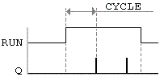
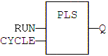
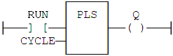

Function Block
Pulse signal generator.
|
Name |
Type |
Description |
|
RUN |
BOOL |
Enabling command. |
|
CYCLE |
TIME |
Signal period. |
|
Name |
Type |
Description |
|
Q |
BOOL |
Output pulse signal. |

On every period, the output is set to TRUE during one cycle only. In LD language, the input rung is the IN command. The output rung is the Q output signal.
MyPLS is a declared instance of PLS function block:
MyPLS (RUN, CYCLE);
Q := MyPLS.Q;

